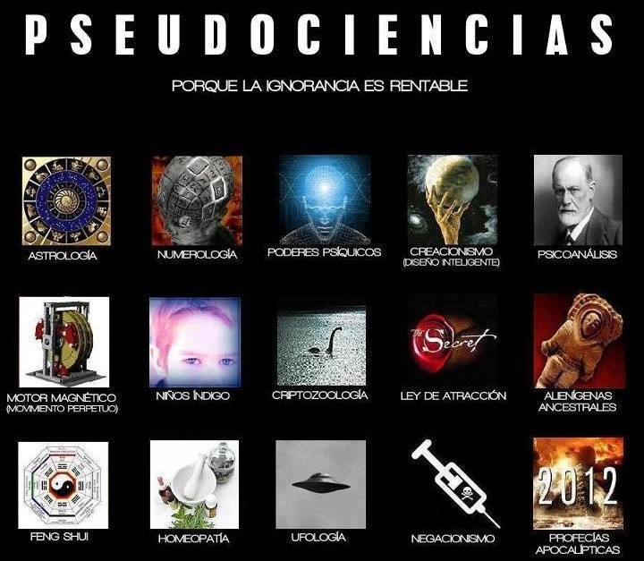
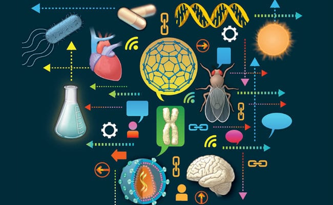

Sobre este articulo
El siguiente fragmento del libro El mundo y sus demonios. La ciencia como una luz en la oscuridad, capitulo 2 – Ciencia y esperanza. Del Sr. Carl Sagan es escrito a continuación única y exclusivamente para uso educativo, evitando de esta manera la reproducción total de este, así como también problemas de propiedad de contenido.
Capítulo 2 - Ciencia y Esperanza
Yo fui un niño en una época de esperanza. Quise ser científico desde mis primeros días de escuela. El momento en que cristalizo mi deseo llego cuando capte por primera vez que las estrellas eran soles poderosos cuando constate lo increíblemente lejos que debían de estar para aparecer como simples puntos de luz en el cielo. No estoy seguro de que entonces supiera siquiera el significado de la palabra “ciencia” pero de algo alguna manera quería sumergirme en toda su grandeza. Me llamaba la atención el esplendor del universo; me fascinaba la perspectiva de comprender como como funcionan realmente las cosas, de ayudar a descubrir misterios profundos, de explorar nuevos mundos… quizá incluso literalmente.
La ciencia es un intento, en gran medida logrado, de entender el mundo, de conseguir un control de las cosas, de alcanzar el dominio de nosotros mismos, de dirigirnos hacia un camino seguro.
La microbiología y la meteorología explican ahora lo que hace unos siglos se consideraba causa suficiente para quemar a una mujer en la hoguera.
La ciencia nos invita a aceptar los hechos, aunque no se adapten a nuestras ideas preconcebidas. Nos aconseja tener hipótesis alternativas en la cabeza y ver cual se adapta mejor a los hechos.
Cada vez que un estudio científico presenta algunos datos, va acompañado de un margen de error: un recordatorio discreto pero insistente de que ningún conocimiento es completo o perfecto. Siempre estaremos sujetos al error. Lo máximo que puede esperar cada generación es reducir un poco el margen de error y aumentar el cuerpo de datos al que se aplica.
La ciencia puede ser difícil de entender. Puede desafiar creencias arraigadas. Cuando sus productos se ponen a disposición de políticos o industriales. Puede conducirla a las armas de destrucción masiva y a graves amenazas al entorno. Pero debe decirse una cosa a su favor: cumple su cometido.

“Si uno quiere saber cuándo será el próximo eclipse de sol, puede preguntar a magos o místicos, pero le ira mucho mejor con los científicos. Le dirán donde colocarse en la tierra, para verlo, cuando debe hacerlo y si será un eclipse total o anular. Pueden predecir rutinariamente un eclipse solar, al minuto, con un milenio de anticipación.”
“Una persona puede ir a ver un brujo para que le quite el sortilegio que le provoca una anemia perniciosa o puede tomar vitamina B… Si quiere salvar de la polio a su hijo puede rezar o puede vacunarle”
“Si le interesa saber el sexo de su hijo antes de nacer puede consultar todo lo que quiera a los adivinos que se basan en el movimiento de la plomada (derecha-izquierda: un niño – adelante; atrás una niña… o quizá al revés) pero, como promedio acertaran solo una de cada dos veces. Si quiere precisión en este caso del noventa y nueve por ciento, pruebe la amniocentesis y las ecografías.”
Pruebe la ciencia.
La ciencia, apunta Ann Druyan, siempre nos esta susurrando al odio “Recuerda que eres nuevo en esto. Podrías estar equivocado, te has equivocado antes”. A pesar de toda la predica sobre la humildad, me gustaría que me enseñasen algo comparable en la religión.
Se dice que las escrituras son de inspiración divina, una frase con muchos significados. Pero ¿y si han sido fabricadas simplemente por humanos falibles? Se da testimonio de milagros, pero ¿y si en lugar de eso son una mezcla de charlatanería, estados de conciencia poco familiares, malas interpretaciones de fenómenos naturales y enfermedades mentales? No me parece que ninguna religión contemporánea y ninguna creencia de la “Nueva Era” tenga en cuenta suficientemente la grandeza, magnificencia, sutileza y complicación del universo revelado por la ciencia. El hecho de que en las escrituras se hallen prefigurados tan pocos descubrimientos de la ciencia moderna aporta mayores dudas a mi mente sobre la inspiración divina.
Pero sin duda podría estar equivocado

A pesar de las abundantes oportunidades de mal uso, la ciencia puede ser el camino dorado para que las naciones en vías de desarrollo salgan de la pobreza y el arraso.
La ciencia nos enseña los aspectos mas profundos de orígenes, naturalezas y destinos: de nuestra especie, de la vida, de nuestro planeta, del universo.
La ciencia confiere poder a todo aquel que se tome la molestia de estudiarla (aunque sistemáticamente se ha impedido a demasiados). La ciencia es una manera de ponerles las cartas boca arriba a los que se la dan de conocedores. Es un bastión contra el misticismo, contra la superstición, contra la religión aplicada erróneamente.

¿Qué tipo de sociedad podríamos crear, si les inculcáramos la ciencia y un soplo de esperanza?